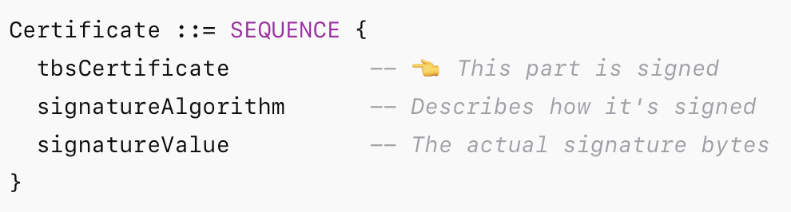

Digital Certificates are one of the foundation blocks of security in digital world. They are used to
authenticate the identity of the device and secure the transactions between devices. Digital certificate is a
data structure that contains various parameters that can be used to establish trust. This section provides an
overview of the digital certificates.
Let us dive into few concepts:
Symmetric key cryptography
In Symmetric key cryptography same key is used to encrypt and decrypt.
Advantage: They are faster to encrypt and decrypt
Disadvantage: The secret key has to be shared between the sender and receiver.
Secure key distribution is a major problem to be solved, and this is where the Asymmetric key cryptography
excells
Asymmetric key cryptography solves the above mentioned key distribution problem by using 2 keys (key pair)
instead of a single shared key.
One of the keys is kept secret - private key
Other key is made public - public key
There are different algorithm choices available for asymmetric key cryptography. Some of the popular ones are:
RSA - Rivest–Shamir–Adleman.
Most suited for communication encryption
Based on difficulty of Prime factorization
DSA - Digital Signature Algorithm
Most suited for signing (encrypting hash) and verification
Based on difficulty of discrete logarithm
ECC- Elliptic Curve Cryptography
Greater cryptographic strengh for equivalent key size in RSA/DSA
Some algorithms like RSA technically allows YOU to choose which key is private and which is public. But some
others like ECC does not give you a choice as they are dissimilar in computation.
Hybrid approach
The Asymetric encryption is computationally heavy (could be 1000s of times heavy) as compared to the symmetric
encryption. In practical usecases a hybrid approach is used where public key cryptography is used for securely
sharing symmetric key. After this initial step, the symmetric key is used always.
Majority of the communication encryption usecases follows a hybrid approch.
Assumetric encryption - Key aspects
Sharing
Public keys can be shared to anyone publicly. There is no secrecy involved here.
Private keys are not shared with anyone else.
Public keys can be shared via different mechanisms . For example:
Manually via email or similar mechanisms
Using a protocol, like TLS
Oneway Encryption
If public key is used to encrypt the message, only the private key can be used to decrypt the message.
If private key is used to encrypt the message, only the public key can be used to decrypt the message.
Alice shares public key to rest of the world including Bob. Bob uses it to encrypt data and send to Alice. Alice
decrypts with private key. Nobody else can decrypt it since they don't have private key
Jac plays the trick
Jac can access Alice's public key since it is shared to the world. Jac uses Alice's public key and sends Alice a
message impersonating Bob "Hello, I am Bob !". Alice will be able to decrypt it with her private key. Alice
thinks it came from Bob, and may respond to him!
To avoid this, digital signatures are used. Bob signs the message using Bobs private key. Alice always uses Bobs
shared public key to verify the signature. Now Jac cannot impersonate Bob since Jac don't have Bobs private key
to sign the message.
A protocol like TLS includes the full mechanism to handle all these aspects using digital signatures. To know
more about TLS, visit: below article:
ssl library performs the verification of certificate date, CA signature verification by default. This is part of
TLS handshake protocol specficcation.
A check is required to ensure that the domain mentioned in the certificate and the domain is used in the
connection is matching. This check is not part of TLS protocol, but it is avalable as part of the ssl libraries.
During the TLS connection establishment time, ssl library is given in the input parameter of the domain or IP to
validate against. When the digital certificate is downloaded as part of the TLS handshake, ssl library checks
the download IP and IP mentioned in the certificate is matching. Certificate validation will be failiing if not
matching. This is an optional feature of the ssl library.
Similarly a certificate revocation checks are also done in ssl library, but it is not part of the TLS protocol.
What is a digital certificate ?
A digital certificate is a file that contains following compoenents:
Public Key
Digital signature of the certificate hash
Asymmetric encryption algorithm used
Hashing and Signature Algorithm used, like sha256RSA
Certificate version
Issuer - Name of the CA that issued and signed the certificate
Subject - Subject to which this certificate is assigned
And more ...
Digital certificate standard
X509 is a standard for publick key digital certificate. All X509 objects are represented in Abstract Syntax
Notation One as a byte array.
Digital certificate file encoding formats
Below are the popular certificate file formats:
PEM - X509 in ASCII format (Base64 encoded)
DER - X509 in binary format (ASN1 encoded in binary)
PKCS12 - A password-protected container format that contains both public and private certificate pairs. It is
fully encrypted. This can contain private key and certificate chain material. This is a Microsoft standard.
PKCS7 - Does not contain private key material. This is a Java open standard
CER - Windows certificate file name in PEM or DER format. Only extension is changed
CRT - Unix certificate file name in PEM or DER format. Only extension is changed
And more ...
Signature Algorithms
In a digital certificate (like an X.509 certificate), the portion that gets signed is called the
"TBSCertificate"(To Be Signed Certificate). After signing The result is stored in the signatureValue field of
the certificate"

Signed Portion of a certificate
Signing process
Hash the data using algorithms like SHA-1
Encrypt the digest with the sender's private RSA key
The result stored in signatureValue field of the certificate
Various algorithms can be used for signing it. Examples below:
RSA-Based Signature Algorithms
sha1WithRSAEncryption - Deprecated
sha256WithRSAEncryption - Secure
sha384WithRSAEncryption - Stronger
sha512WithRSAEncryption - Strongest
ECDSA-Based Signature Algorithms
ecdsa-with-SHA1 - Deprecated
ecdsa-with-SHA256 - Common
ecdsa-with-SHA384 - Stronger
ecdsa-with-SHA512 - Strongest
EdDSA-Based Signature Algorithms
Ed25519 - Fast, strong, and modern
Ed448 - Even stronger but less commonly supported
RSA-PSS (Probabilistic Signature Scheme)
RSASSA-PSS - More secure than PKCS#1 v1.5 RSA
Deprecated / Legacy Algorithms (Avoid)
md5WithRSAEncryption - MD5 is broken
sha1WithRSAEncryption - SHA-1 is broken
ecdsa-with-SHA1 - SHA-1 is broken
Fingerprint Algorithms
A signature is created by the issuer using their private key, and it's used to validate the authenticity of
the certificate
A fingerprint is a hash value of the certificate's entire DER-encoded content (binary format).
A fingerprint is just a hash — no signing involved. It's used more for identification and comparison than
validation
If any part of the certificate is modified (even one bit), the fingerprint will change. You can manually
verify the fingerprint against a known trusted value — for example, if your organization publishes the correct
fingerprint for internal servers
Typical fingerprint algorithms used
SHA-1 (legacy)
SHA-256 (modern, recommended)
MD5 (deprecated, insecure)
Usecases
Certificate Trust Verification
Manually verifying a certificate from a source (website, app, server) - “Here’s the SHA-256
fingerprint of our SSL certificate. Make sure it matches.”. Example: SSH key verification or
installing a root CA cert
You compare the fingerprint shown locally to the one published on a trusted website or document. If
they match, you can trust it. If they don’t tampering might’ve occurred
SSH Host Key Verification
"Is this the real server, or is someone pretending to be it?" - The first time you connect, you have
to trust the fingerprint or compare it with a known-good value
When you ssh for first time, you may see a message "The authenticity of host 'example.com' can't be
established. RSA key fingerprint is SHA256:abcd1234...Are you sure you want to continue? "
This is a fingerprint of the server’s SSH key.
At this point, you're supposed to compare this fingerprint to a value provided by your sysadmin
Working
SSH client receives the server's public key
SSH client It hashes that key using a fingerprint algorithm
It compares that hash against any known fingerprints in your ~/.ssh/known_hosts file
If it matches, you're good
If it doesn't, you get a warning (maybe a MITM attack, or maybe the server reinstalled).
Certificate Pinning
Mobile apps and web apps can “pin” a fingerprint (SHA-256 of the cert) instead of trusting just a CA
Even if a valid cert is issued by a trusted CA, if it doesn't match the pinned fingerprint, the app
refuses to connect
Used by banks, messengers, and secure apps
In ssh, you can manually pin a known fingerprint to a host using the known_hosts file . This prevents
SSH from silently accepting unknown keys
Identifying and Organizing Certificates
In enterprise environments with hundreds or thousands of certs, fingerprints help you track and
identify specific certificates
Tools like browsers, certificate managers, and cloud dashboards often show fingerprints for visual
verification
Self signed digital certificates
A self-signed certificate is a digital certificate that is signed by the entity it is issued to, rather than a
trusted Certificate Authority (CA).
In a self signed certificate:
The issuer and subject are the same
It’s signed with its own private key, not by a certificate authority (CA).
You’ll usually also get a big "Not Trusted" warning unless you’ve added it to your trusted store
Common types of digital certificates
Although underlying technology is the same, there are different types of digital certificates depending on the
use
SSL/TLS Certificates- Validates server identity.
CN (domain), SAN, Org, Issuer, Expiry, Public Key
Code Signing Certificates - Validates Software origin and integrity.
Root Certificates - Establishing trust for all certs.
CN, Org, Serial, Self-signed, Public Key
Intermediate Certificates - Bridging trust from root to leaf. – Issued by a root or another intermediate CA to
help distribute trust securely. Validates Root CA authenticity, and Chain of trust .
CN, Org, Serial, Signed by Root, Public Key
Non X.509 digital certificates
PGP Certificates (Pretty Good Privacy)
Format: OpenPGP
Not based on X.509 at all
Used in email encryption, file signing, and tools like GnuPG (GPG)
No central certificate authority (CA); uses a "web of trust" model instead of PKI.
Certificates contain: User ID (name, email), Public key, Signatures from other users (for trust)
Decentralized trust, user-to-user verification
SSH Public Keys
Not certificates in the X.509 sense, but they’re used to authenticate users/hosts
SSH keys are raw key pairs (e.g., RSA, Ed25519), often stored in: ~/.ssh/id_rsa.pub,
/etc/ssh/ssh_host_rsa_key.pub
Can optionally be wrapped in OpenSSH certificate format
These certificates are not X.509, but serve a similar purpose (signed public keys with metadata)
Lightweight, flexible, and mostly used in internal or dev environments
S/MIME Certificates (Older Versions)
Modern S/MIME uses X.509, but some older or proprietary formats used custom certificate structures. Some
early email systems or vendors had their own crypto formats before standards unified around X.509
JSON Web Tokens (JWTs) with Public Keys
Not exactly certificates, but serve similar purposes in identity and authorization
A JWT can include a JWK (JSON Web Key), which can be verified using a public key
Common in OAuth 2.0, OpenID Connect, and API token systems
Web-native, token-based identity, often with signed payloads
Fields in digital certificates X.509
X.509 digital certificates, commonly used in SSL/TLS for secure communication, have a standardized structure
defined by the X.509 specification
Basic Certificate Fields
Version - Indicates the X.509 version (v1, v2, v3).
Serial Number - A unique identifier assigned by the issuing Certificate Authority (CA)
Signature Algorithm - Specifies the algorithm used by the CA to sign the certificate
Issuer - The entity that issued the certificate (usually a CA). Includes details like Common Name (CN),
Organization (O), Country (C), etc
Validity Period - Not Before: The start date/time the certificate is valid, Not After: The expiry
date/time
Subject - The entity the certificate is issued to. Includes fields like Common Name (CN), Organization,
Country, etc
Subject Public Key Info - Algorithm: The public key algorithm (e.g., RSA, ECDSA), Public Key: The actual
public key
Extensions (v3 certificates only)
Basic Constraints - Indicates if the certificate is a CA certificate or not. Example: CA:TRUE or CA:FALSE
Key Usage - Specifies the intended usage of the public key . Examples: Digital Signature, Key
Encipherment, Certificate Signing
Extended Key Usage - More specific usage purposes. Examples: TLS Web Server Authentication, Code Signing
Subject Alternative Name (SAN) - Lists additional identities like DNS names or IP addresses. Crucial for
modern HTTPS (often more important than CN).
CRL Distribution Points - URL(s) where the Certificate Revocation List can be obtained
Authority Key Identifier - Identifies the public key of the CA that issued the certificate
Subject Key Identifier - A unique identifier for the certificate’s public key
Authority Information Access - Provides methods to access the issuing CA’s certificate or Online
Certificate Status Protocol (OCSP) responder
Importance of Subject Alternative Name (SAN)
The Subject Alternative Name (SAN) is one of the most important extensions in modern X.509 certificates,
especially for web security and HTTPS
SAN replaces the Common Name (CN) for domain validation
Historically, the Common Name (CN) field in the Subject was used to specify the hostname
Modern browsers and clients now rely on SAN instead of CN to validate the domain
If SAN is missing, many clients (especially modern browsers like Chrome, Firefox) will reject the
certificate, even if the CN is correct
Supports multiple domain names
SAN allows a single certificate to secure multiple domains or subdomains, like:
This is particularly useful for: Multi-domain SSL certificates, Wildcard-like support (to some extent,
though not identical)
Wildcard digital certificates
A wildcard certificate is a type of SSL/TLS certificate that secures a domain and all of its subdomains at a
single level using a wildcard character (*).
Certificate for *.example.com covers: www.example.com, mail.example.comm blog.example.com etc. But it does not
cover: sub.mail.example.com (that’s a second-level subdomain) or example.org (different root domain)
Usecases
Hosting multiple subdomains on a single certificate. Example: A web hosting company with clients on
client1.hosting.com, client2.hosting.com, etc. Saves cost and effort compared to managing separate certs
Dynamic subdomain creation. Great for SaaS platforms where each customer gets a subdomain (e.g.,
user1.app.com, user2.app.com).
Simplifies certificate management - Fewer certificates to track and renew. Ideal for organizations with large
internal infrastructure or microservices architecture
Cons - Security risk: If one private key is compromised, all subdomains are vulnerable
Cons - Some Certificate Authorities limit wildcard support (e.g., not allowed for EV certs)
SHA-1 digital certificate
A SHA-1 digital certificate is an X.509 certificate (used in HTTPS, email security, code signing, etc.) that
uses the SHA-1 (Secure Hash Algorithm 1) cryptographic hash function in one or more of the following areas:
Signature Algorithm – The certificate is digitally signed by a Certificate Authority (CA) using SHA-1,
often shown as something like sha1WithRSAEncryption.
Thumbprint / Fingerprint – SHA-1 is used to generate a fingerprint of the certificate (not related to
trust, just an identifier).
SHA-1 certificate is deprecated as it is considered cryptographically broken. Most browsers, operating
systems, and CAs now reject or warn against SHA-1 certificates
Signature Algorithm: sha1WithRSAEncryption - is not ok
Fingerprint Algorithm: SHA-1 Fingerprint - is ok. still common for identification, not used for security
SHA-256 or better (SHA-2 family) is now the standard
SHA-2 digital certificate
Most Common Today.
SHA-2 family of hash functions includes - SHA-224, SHA-256 (most widely used), SHA-384, SHA-512
Working of PKI
You will generate a key-pair
You will keep the private key secret
Certificate Signing Request (CSR) is made for a domain name or multiple domain names. CSR includes your public
key information and information about your domain inside a configuration file. CSR is then sent to CA. Below
command generate key pair having password protected private key, and a CSR.
CA verifies crispinjacob.com.csr and signs your public key and related information in the form of a signed
public key certificate
You will install your signed certificate in your server
You will install your private key in your server. This private key is password protected while generating it.
Only your server can use this private key.
A webbrowwer or client application access your server and TLS handshake occures, and publick key certificate
is downloaded to browser as part of HTTPS handshake
Browser verifies the received server certificate before trusting it - validiyt, connected domain and domain
name the certificate and so on.
The certificate verification is baed on a trust achor that browser has access to. Trust anchor is a CA
certificate that is often distribuited along with browser, or store in the OS that the browser trusts. Browser
expects the downloaded server certificate is signed by this CA certificate (trust anchor)
In most cases the server certificate is not signed by the root CA that comes with OS or brower. That will be
another CA that the trust anchor CA trusts . This is called an intermediate CA.
In this case, the brower checks who signed the intermediate certificate. If it is signed by one of the trust
Anchors then the brower trusts the downloaded server certificate. This verification is performed by decrypting
that intermediate CA signature using trust anchors (root CA) public key.
Often a further lower hierarchy CA might have signed the server certificate.
in this case, the brower verifies the issuer CA signed the server certificate, by decrypting server
certificate signature with issuer CA public key. Then browser verifies the parent CA that signed the CA. This
process goes from leaf node server certificate, up till trust anchror which is often the trust anchor
certificate. If successful, at that point , the trust is established on the serer certificate.
Note that if you install one of the intermediate CA certificate in your brower/OS, then that will be your
trust anchor, and you dont need to check till root CA. Often the entire chain of certificate is downloaded in
single shot during TLS handshake. Note that if your browser misses one of the intermediate certificates, then
your certificate's verification will fail.
Certificate Chain
Server certificate chain is sent as part of the TLS handshake. Certificate chain is based on chain of trust
concept.
The sender decides the certificates includes in the certificate chain. For example sender may exclude
unnecessary certificates, like trusted root certificate. It's considered a best practice to configure your
webserver to deliver the full chain.
If the certificate chain size exceeds TCP’s initial congestion window, it caan cause roundtrips to the TLS
handshake. As newer TCP stack has initial congestion window increased to 10 TCP segments this is sufficient for
most certificate chains.
Revoking a certificate
One method is to periodically download Certificate Revocation List (CRL) and inspect every certificate in the
list. If the certificate is in revocation list , the certificate verification will be made to fail. This is not
a scalable nechanism.
The alternate mechanism is to use a protocol Online Certificate Status Protocol (OCSP).OCSP helps the client to
check the validity of the certificate using a query instead of storing a list. The CA also need to support OCSP
protocol.
In OCSP Stapling protocol, the server retrieves OCSP response and sends to client during the handshake. As OCSP
resonse is signed by CA, the client can verify it
What if a popular CA creates a fake certificate and setup a fake webserver ?
Often the rootCAs are and trusted. But when it comes to intermediates CAs of small size, there is a possibility
of malicios actors. If your intermedicate CA issues a fake certificate using your domain name, you wont come to
know about it. This certificate can be used for man in the middle attack since the brower will trust your domain
name